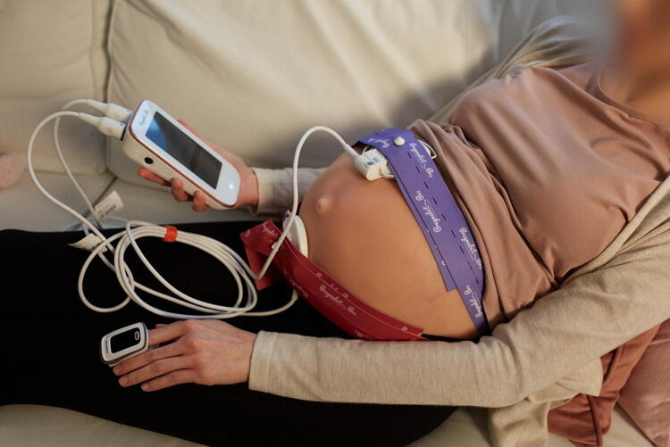
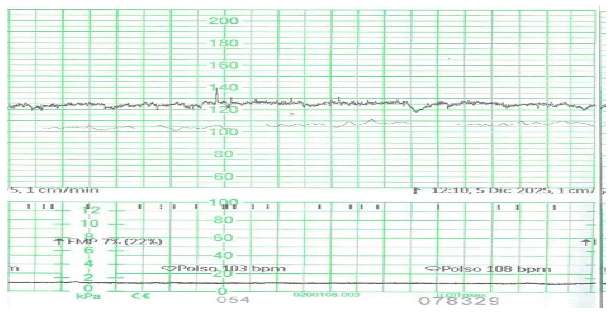
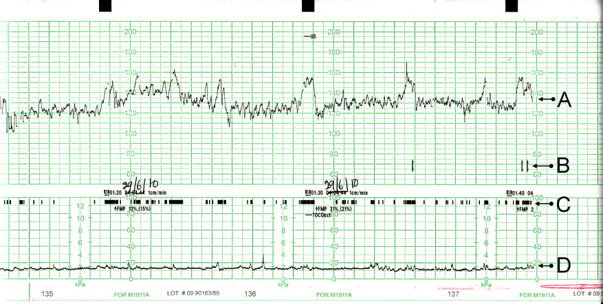

Página 3 · Vigilância aguda e cardiotocografia
Como se faz e o que ela REALMENTE lê (o SNC, não o coração)
Não é. Ela nem toca no coração como quem mede corrente elétrica: o que ela realmente lê está mais acima, no cérebro. Antes de entender por que, a técnica — porque posicionar errado invalida o exame.
O posicionamento correto
O posicionamento correto já foi questão de segunda fase. A paciente fica em decúbito lateral esquerdo, ou em posição de 45° ("posição de fôlego"). E os "nunca", que são o que a banca cobra: nunca em decúbito dorsal, nunca totalmente sentada, nunca em jejum.
Por que decúbito lateral esquerdo
O decúbito lateral esquerdo é o clássico e tem mecanismo: o útero tem destrorrotação — fica naturalmente rodado para a direita. Virar a paciente para a esquerda descomprime melhor os grandes vasos (aorta e cava), melhorando o retorno venoso e o fluxo uteroplacentário. Deitar de barriga para cima (dorsal) faz o útero comprimir a cava e reduzir o retorno — por isso o dorsal está proibido.
Interativo: alterne dorsal × DLE para ver a cava comprimir e descomprimir.
O útero tem destrorrotação (fica rodado para a direita). O toggle mostra o mecanismo: no dorsal, o útero comprime a veia cava (proibido); no DLE, a cava se descomprime e melhora o retorno venoso e o fluxo uteroplacentário.Duração e o jejum
O exame dura de 20 a 40 minutos, com a paciente deitada. E ela deve ser orientada de que pode se alimentar — o jejum interfere no resultado (a hipoglicemia reduz a reatividade fetal, o mesmo racional do movimento que cai com fome). É comum a paciente associar o exame a coleta de sangue e comparecer em jejum; a falha aí é de orientação — cabe explicar que não é para vir em jejum.
A virada: a cardiotoco lê o SNC
Aqui está a beleza do exame, e a tese da página. A cardiotocografia fala muito mais do que sobre o batimento: ela informa sobre o sistema nervoso central do feto — como estão o simpático, o parassimpático e o fluxo cerebral. Olha-se para o coração para ler, indiretamente, a oxigenação do sistema nervoso central. O coração é a janela 💗; o cérebro é o que se observa por ela. É por isso que um traçado com boa variabilidade e acelerações tranquiliza tanto: significa um SNC bem oxigenado, com autonômico funcionando.
Interativo: clique em cada via autonômica para ver sua tradução no traçado.
Olha-se para o coração 💗 para ler, indiretamente, a oxigenação do sistema nervoso central: cada hotspot mostra como o simpático, o parassimpático e o fluxo cerebral se traduzem no traçado. Boa variabilidade + acelerações = SNC bem oxigenado. Não é eletro do bebê.Não é "eletro do bebê"
Fica desmontado o mito: a cardiotocografia não é um eletrocardiograma fetal. Ela não mede a atividade elétrica do coração para procurar arritmia — ela usa o batimento como marcador da integridade e da oxigenação do SNC. Chamar de "eletro do bebê" é erro leigo, e a página inteira existe para corrigi-lo.
O setup dos dois transdutores
São dois transdutores. O tocógrafo, posicionado no fundo uterino, avalia a contração — intensidade e tônus (a metrossístole). O transdutor cardíaco, colocado no melhor foco de ausculta, capta o batimento. Um lê a contração, o outro lê o coração — e o traçado alinha os dois no tempo, que é o que permitirá correlacionar desaceleração com contração lá na frente.

A técnica correta (questão de 2ª fase): gestante em decúbito lateral esquerdo / semi-Fowler 45° para reduzir a compressão aortocava, com os transdutores abdominais posicionados.
O transdutor superior, sobre o fundo uterino, é o tocógrafo/TOCO — detecta as variações mecânicas da contração. O de FCF/Doppler fica no foco de melhor ausculta (sobre o dorso fetal, localizado pelas manobras de Leopold). O TOCO não mede batimento; o Doppler não mede contração — e o oxímetro no dedo registra a frequência materna, não é transdutor do CTG.
Fonte: Olesiak-Andryszczak et al., Home Cardiotocography in High-Risk Pregnancies, Telemedicine Reports 2025, Fig. 2 (foto Nestmedic S.A.) — CC BY 4.0 · página de origem
O botãozinho de eventos e a cardiotoco anteparto
Há um terceiro elemento, subjetivo mas útil: o botãozinho de eventos. A mãe segura um botão e aperta cada vez que sente o feto mexer, marcando risquinhos no traçado. É dado subjetivo (depende de a mãe perceber), mas ajuda a distinguir mudanças do batimento causadas por movimento fetal das causadas por contração. E um detalhe de reconhecimento que cai: a cardiotocografia anteparto se identifica porque o canal do tocógrafo não mostra contração — foi feita no pré-natal, fora do trabalho de parto. Fora da exceção do pós-datismo, não se faz CTG de rotina em baixo risco.

Um detalhe de reconhecimento que cai: a cardiotocografia anteparto se identifica porque o canal do tocógrafo não mostra contração.
O achado está no painel inferior: o canal de atividade uterina permanece junto à linha basal, sem as ondas largas, arredondadas e repetidas da metrossístole. Contração no tocógrafo é subida sustentada e queda em sino — não ruído basal. Fora do trabalho de parto, o canal fica vazio.
Fonte: Case E et al., Healthcare 2026;14(11):1534, MDPI — CC BY 4.0 (seta adaptada) · página de origem

O botãozinho de eventos: a mãe aperta um botão a cada movimento percebido, marcando risquinhos no traçado — dado subjetivo, mas útil para distinguir mudança por movimento de mudança por contração.
Na faixa B, logo abaixo do traçado principal (A = FCF), os pequenos risquinhos verticais são os movimentos percebidos pela mãe; a faixa C mostra o movimento fetal registrado e a linha D, a atividade uterina. Risquinhos podem coincidir com acelerações; contração verdadeira é a onda lenta na linha D.
Fonte: Phantom Steve, Wikimedia Commons — CC BY-SA 3.0 (re-anotado: marcas do botão de eventos) · página de origem
Quiz — fixação
Sobre o preparo e o posicionamento para a cardiotocografia, assinale a correta:
- B) Correta. DLE/45° com a paciente alimentada; o dorsal comprime a cava (útero destrorrodado) e o jejum reduz a reatividade — ambos invalidam o traçado.
- A) Junta os dois "nunca" da página. Dorsal + jejum: "padronizar" soa técnico, mas padroniza o erro.
- C) Confunde a inclinação de 45° com sentar. Totalmente sentada é proibido; 45° ("fôlego") é diferente de sentada ereta.
- D) O conforto é verdadeiro, mas não dispensa a técnica. Posição importa (mecanismo da cava) e jejum interfere.
A afirmação "a cardiotocografia é um eletrocardiograma do bebê" está incorreta porque:
- B) Correta. O coração é a janela, o SNC é o observado: a CTG lê oxigenação do SNC pelo comportamento do batimento, não a eletrofisiologia cardíaca.
- A) Lembra o tocógrafo e esquece o transdutor cardíaco. A CTG avalia o batimento e a contração (dois transdutores); dizer que só mede contração é falso.
- C) Tenta "salvar" a palavra elétrico mudando o órgão. Não é exame elétrico nem do útero nem do coração; o tocógrafo capta pressão/contração mecânica.
- D) Mistura com os intervalos de ausculta do expulsivo. A CTG é usada no pré-natal (anteparto) e no parto; não se restringe ao expulsivo.
Com a técnica correta e a tese firmada, começa a leitura de verdade: o primeiro dos quatro parâmetros que se lauda num traçado — onde o coração está batendo na maior parte do tempo.